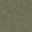
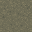
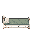
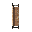
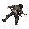
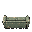
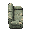
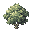

bridge_wood_deck
bridge_wood_deck · 32×32terrain-component
canal_steps_e
canal_steps_e · 32×32terrain-component
canal_steps_w
canal_steps_w · 32×32terrain-component
canal_water
canal_water · 32×32terrain-component
courtyard_paving
courtyard_paving · 32×32terrain-component
室内地板
floor · 32×32terrain-component平整水泥 A
ground_concrete_plain_01 · 32×32ground · 地面字符 1平整水泥 B
ground_concrete_plain_02 · 32×32ground · 地面字符 2
压实泥土 A
ground_soil_compact_01 · 32×32ground · 地面字符 3
压实泥土 B
ground_soil_compact_02 · 32×32ground · 地面字符 4
低地
low · 32×32terrain-component
洼地
marsh · 32×32terrain-component
quay_top
quay_top · 32×32terrain-component
street_stone
street_stone · 32×32terrain-component
墙体 · 连续墙顶
wall · 32×32terrain-component
wall_face_e
wall_face_e · 4×48terrain-component
wall_face_s
wall_face_s · 32×32terrain-component
油桶
barrel · 32×32scene-component
barrel_back
barrel_back · 32×32scene-component
barrel_side
barrel_side · 32×32scene-component
bed_clinic
bed_clinic · 32×32scene-componentbed_clinic_back
bed_clinic_back · 32×32scene-component
bed_clinic_large
bed_clinic_large · 32×64scene-component
bed_clinic_large_back
bed_clinic_large_back · 32×64scene-component
bed_clinic_large_side
bed_clinic_large_side · 64×32scene-component
bed_clinic_side
bed_clinic_side · 32×32scene-component
bed_home
bed_home · 32×32scene-componentbed_home_back
bed_home_back · 32×32scene-component
bed_home_large
bed_home_large · 32×64scene-component
bed_home_large_back
bed_home_large_back · 32×64scene-component
bed_home_large_side
bed_home_large_side · 64×32scene-componentbed_home_side
bed_home_side · 32×32scene-component
bench_wood
bench_wood · 32×32scene-componentbench_wood_back
bench_wood_back · 32×32scene-component
bench_wood_large
bench_wood_large · 64×32scene-component
bench_wood_large_back
bench_wood_large_back · 64×32scene-component
bench_wood_large_side
bench_wood_large_side · 32×64scene-component
bench_wood_side
bench_wood_side · 32×32scene-component
地面血迹
blood · 32×32scene-component
bridge_stone_rail_n
bridge_stone_rail_n · 32×32scene-component
bridge_stone_rail_s
bridge_stone_rail_s · 32×32scene-component
bridge_wood_rail_n
bridge_wood_rail_n · 32×32scene-component
bridge_wood_rail_s
bridge_wood_rail_s · 32×32scene-component
canal_bank_e
canal_bank_e · 32×32scene-component
canal_bank_w
canal_bank_w · 32×32scene-component
翻倒的椅子
chair · 32×32scene-component
chair_back
chair_back · 32×32scene-component
chair_side
chair_side · 32×32scene-component
console_security
console_security · 32×32scene-component
console_security_back
console_security_back · 32×32scene-component
console_security_side
console_security_side · 32×32scene-component
corpse
corpse · 32×32scene-component
尸体 · 回响体（异常）
corpse_echo · 32×32scene-component
尸体 · 潮汐守卫（机械）
corpse_guard · 32×32scene-component
尸体 · 拾荒者（人类）
corpse_scav · 32×32scene-component
counter_bank
counter_bank · 32×32scene-componentcounter_bank_back
counter_bank_back · 32×32scene-component
counter_bank_large
counter_bank_large · 64×32scene-component
counter_bank_large_back
counter_bank_large_back · 64×32scene-component
counter_bank_large_side
counter_bank_large_side · 32×64scene-componentcounter_bank_side
counter_bank_side · 32×32scene-component
counter_shop
counter_shop · 32×32scene-componentcounter_shop_back
counter_shop_back · 32×32scene-component
counter_shop_large
counter_shop_large · 64×32scene-component
counter_shop_large_back
counter_shop_large_back · 64×32scene-component
counter_shop_large_side
counter_shop_large_side · 32×64scene-componentcounter_shop_side
counter_shop_side · 32×32scene-component
床头柜
crate_bedside · 32×32scene-component
遗弃纸箱
crate_cardboard · 32×32scene-component
通讯设备箱
crate_comms · 32×32scene-component
密封公文包
crate_diplomatic · 32×32scene-component
电子设备柜
crate_elec · 32×32scene-component
急救器材箱
crate_emergency · 32×32scene-component
抽屉 / 矮柜
crate_fast · 32×32scene-component
办公文件柜
crate_filing · 32×32scene-component
保险箱
crate_heavy · 32×32scene-component
珠宝匣
crate_jewelry · 32×32scene-component
皮质旅行包
crate_leatherbag · 32×32scene-component
旅行箱
crate_luggage · 32×32scene-component
医疗柜
crate_med · 32×32scene-component
救援人员背心
crate_rescuevest · 32×32scene-component
帆布挎包
crate_satchel · 32×32scene-component
运动包
crate_schoolbag · 32×32scene-component
机密封存箱
crate_sealed · 32×32scene-component
员工储物盒
crate_staff · 32×32scene-component
储物柜
crate_std · 32×32scene-component
防水补给箱
crate_supply · 32×32scene-component
工具箱
crate_tool · 32×32scene-component
垃圾桶
crate_trash · 32×32scene-component
废纸篓
crate_wastepaper · 32×32scene-component
遗落的工作服
crate_workwear · 32×32scene-component细裂纹
decal_surface_crack_01 · 32×32decal潮湿痕迹
decal_surface_damp_01 · 32×32decal
办公桌
desk · 32×32scene-componentdesk_back
desk_back · 32×32scene-component
desk_large
desk_large · 64×32scene-component
desk_large_back
desk_large_back · 64×32scene-component
desk_large_side
desk_large_side · 32×64scene-componentdesk_side
desk_side · 32×32scene-component
display_clock
display_clock · 32×32scene-componentdisplay_clock_back
display_clock_back · 32×32scene-component
display_clock_large
display_clock_large · 64×32scene-component
display_clock_large_back
display_clock_large_back · 64×32scene-component
display_clock_large_side
display_clock_large_side · 32×64scene-componentdisplay_clock_side
display_clock_side · 32×32scene-component
门 · 正向（关闭）
door · 32×32scene-component
门 · 正向（打开）
door_open · 32×32scene-component
普通门 · 侧向（关闭）
door_side · 32×32scene-component
普通门 · 侧向（打开）
door_side_open · 32×32scene-component
撤离点
exit · 32×32scene-component
rubble_decal
rubble_decal · 32×32scene-component
避难间门 · 正向（关闭）
sdoor · 32×32scene-component
避难间门 · 正向（打开）
sdoor_open · 32×32scene-component
避难门 · 侧向（关闭）
sdoor_side · 32×32scene-component
避难门 · 侧向（打开）
sdoor_side_open · 32×32scene-component
货架
shelf · 32×32scene-componentshelf_back
shelf_back · 32×32scene-component
shelf_large
shelf_large · 64×32scene-component
shelf_large_back
shelf_large_back · 64×32scene-component
shelf_large_side
shelf_large_side · 32×64scene-componentshelf_side
shelf_side · 32×32scene-component
shop_window_ns
shop_window_ns · 32×32scene-component
sofa_home
sofa_home · 32×32scene-component
sofa_home_back
sofa_home_back · 32×32scene-component
sofa_home_large
sofa_home_large · 64×32scene-component
sofa_home_large_back
sofa_home_large_back · 64×32scene-component
sofa_home_large_side
sofa_home_large_side · 32×64scene-component
sofa_home_side
sofa_home_side · 32×32scene-component
stove_home
stove_home · 32×32scene-component
stove_home_back
stove_home_back · 32×32scene-component
stove_home_side
stove_home_side · 32×32scene-component
tree_courtyard
tree_courtyard · 32×32scene-componenttree_courtyard_back
tree_courtyard_back · 32×32scene-component
tree_courtyard_canopy
tree_courtyard_canopy · 96×96scene-component
tree_courtyard_canopy_back
tree_courtyard_canopy_back · 96×96scene-component
tree_courtyard_canopy_side
tree_courtyard_canopy_side · 96×96scene-component
tree_courtyard_side
tree_courtyard_side · 32×32scene-component
wall_breach_n
wall_breach_n · 32×32scene-component
wall_breach_s
wall_breach_s · 32×32scene-component